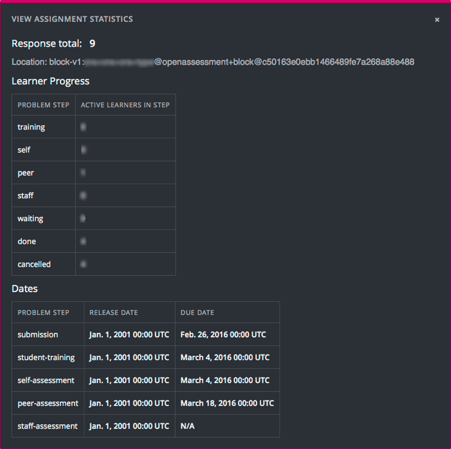

10.26.5. Accessing Metrics for ORA Assignments#
After you release an open response assessment assignment, you can access various metrics for the assignment or for all open response assessment assignments in the course. For example, you can view the number of learners in each step of the assignment or in possible states such as “Waiting” or “Completed” within the assignment. In addition to viewing metrics for the assignment or for assignments in a course, you can also access assignment details for an individual learner, or generate a report containing learner and response details for ORA assignments in the course.
For information about tasks that you can perform on learner responses in an ORA assignment, including performing a grade override assessment or cancelling a learner’s submission, see Managing Open Response Assessment Assignments.
10.26.5.1. View Statistics for All ORA Assignments in a Course#
To view metrics about all of the ORA assignments in a course, follow these steps.
View the live version of the course.
Select Instructor to open the instructor dashboard.
On the instructor dashboard, select Open Responses.
The Open Responses tab of the instructor dashboard displays the following information.
The number of course units that include an ORA assignment.
The number of ORA assignments in the course.
The total number of submitted responses.
The number of learners who are in each of the training, peer, self, and staff workflow states.
The number of learners who have received a final grade.
The Open Responses tab also displays the same information for each separate ORA assignment in the course, grouped by the course units that include ORA assignments.
10.26.5.2. List and manage students waiting in peer step#
On ORA problems with the peer assessment step, sometimes learners might get stuck waiting peer reponses to evaluate or peer reviews from other learners indefinitely. There’s a tool in the instructor dashboard that allows listing and managing those learners.
To view a list of students in the waiting step of an ORA problem in a course, follow these steps.
View the live version of the course.
Select Instructor to open the instructor dashboard.
On the instructor dashboard, select Open Responses.
In the table listing the ORA problems, locate the waiting column corresponding to the problem you want to see users waiting on.
If there are any students in the waiting step, the column will become clickable.
Select it to open the Waiting step details page.
The Waiting step details page displays some information related to the peer step configuration and a table listing users in the waiting step with the following attributes:
Usernames
Number of peers assessed
Number of peer reviews received
Time spent on the waiting step so far
Status from staff assessment step, if available in problem
Final grade status (waiting or overwritten).
The Waiting step details page also allows managing student grades through the Manage individual learners button near the bottom of the page, which works in the same manner as View a Specific Learner’s Response and Assessments.
10.26.5.3. View Statistics for a Single ORA Assignment#
To view metrics about learners in a single ORA assignment, including the number who are active in each step, follow these steps.
Open the ORA assignment in the course.
Scroll to the bottom of the assignment and select View Assignment Statistics.
You see statistics for the assignment, including the total number of responses and the location ID for the assignment.
In the Learner Progress section, for each assessment step in the assignment, you can see the number of learners who are currently working through (but who have not completed) that step. Only assessment types that exist in the assignment are included.
Note
If a Staff Assessment step exists in the assignment, this step will always show 0 active learners, because no learner actions are required for that step.
In addition to learners who are active in the assessment steps of the assignment, you can see the number of learners who are in the following states in the assignment.
Waiting: Learners who have finished the requirements for a step and are waiting for their responses to be assessed by peers or staff.
Done: Learners who have completed all of their required steps, and have received the required number of reviews.
Cancelled: Learners who have had their responses cancelled.
In the Dates section below Learner Progress, the release and due dates for each step in the assignment are shown.
{kind=link}
10.26.5.4. Generate a Report for ORA Assignments#
To generate a report containing details of the ORA assignments in the course, follow these steps.
View the live version of your course.
Select Instructor, and then select Data Download.
In the Reports section, select Generate ORA Data Report.
A status message indicates that the ORA data report is being generated. This process might take some time to complete, but you can navigate away from this page and do other work while it runs.
To check the progress of the report generation, reload the page in your browser and scroll down to the Pending Tasks section. The table shows the status of active tasks.
When the report is complete, a linked .csv file name becomes available above the Pending Tasks section. File names are in the format
{course_id}_ORA_data_{datetime}.csv. The most recently generated reports appear at the top of the list.To open or save the generated ORA data report, locate and select the link for the grade report you requested.
You can open .csv files in a spreadsheet application to sort, graph, and compare data.
10.26.5.4.1. Interpret the ORA Data Report#
The ORA data report for your course is a time-stamped .csv file that contains data for all the ORA assignments in your course. For each ORA assignment in the course, the report provides information that includes each learner’s anonymized ID, response, assessments details and scores, and the final score for the assignment. For more details about each column in the report, see the following descriptions.

The .csv file contains one row of data for each response from a learner.
The IDs in the Submission ID and Item ID columns uniquely identify the problem within the course content and the learner’s submission for that problem. The Problem Name column is also available to help identify a problem by its display name.
The Username column helps identify impacted learner submissions for further platform review if applicable.
The Anonymized Student ID column lists an ID for each learner without revealing confidential, personally identifiable data such as email addresses and usernames.
The Date/Time Response Submitted column displays the date and time that the learner submitted her response, in YYYY-MM-DD HH-MM-SS format.
The Response column displays the content of the learner’s response.
The Assessment Details column displays the following details for the assessments that were performed on the response.
The time and date that the assessment was submitted.
The type of assessment: self (SE), peer (PE), staff (ST).
The ID of the person who performed the assessment.
Any text comments about the response that were included in the assessment.
The Assessment Scores column lists the scores that the response received in self, peer, or staff assessments.
The Date/Time Final Score Given, Final Score Points Earned, and the Final Score Points Possible columns provide details of the final score that the response received. If a response has not received enough assessments for the assignment to be considered complete, these columns show a value of “None”.
The Feedback Statements Selected and Feedback on Peer Assessments columns together show the information that learners provided in the Provide Feedback on Peer Assessments section of their ORA assignments. This section is available to learners only when all assessments for an assignment have been completed, and provides an optional way for learners to comment on their experience of the peer assessment process.
The Feedback Statements Selected column displays the text of the feedback statements (if any) that the learner selected to describe their experience of the peer assessment process. Learners can select either “These assessments were useful” or “These assessments were not useful”. They can also select either or both of “I disagree with one or more of the peer assessments of my response” and “Some comments I received were inappropriate”.
If a learner also provided a free-form comment in the text field below the selectable feedback statements, the text appears in the Feedback on Peer Assessments column.
10.26.5.5. Generate a Report for ORA File Submissions and Attachments#
To generate a report containing details of the ORA assignments in the course, follow these steps.
View the live version of your course.
Select Instructor, and then select Data Download.
In the Reports section, select Generate ORA Submission Files Archive.
A status message indicates that the ORA data report is being generated. This process might take some time to complete, but you can navigate away from this page and do other work while it runs.
To check the progress of the report generation, reload the page in your browser and scroll down to the Pending Tasks section. The table shows the status of active tasks.
When the report is complete, a linked .zip file name becomes available above the Pending Tasks section. File names are in the format
{course_id}_submission_files_{datetime}.csv. The most recently generated reports appear at the top of the list.To open or save the generated ORA submission files archive, locate and select the link for the archive you requested.
You can open .zip files using your computer and navigate the student’s submissions from your file explorer.
10.26.5.5.1. Interpret the ORA Submission Files Archive#
The ORA submission files archive for your course is a zipped folder that contains both a time-stamped .csv file listing out all included submissions as well as folder directories with the contents of these submissions for each ORA problem contained in your course.
This zipped directory contains a downloads.csv file which lists all available submissions,
their location, the content of any text submissions and file IDs for any attached
files included in the submission. Missing or corrupted files will be annotated with
False in the file_found column of this document but will not be included in the
zipped file archive.
Inside the zipped directory there’s a folder for each unit that contains an ORA
problem in the course named using the following format: [section_index] Section
title, [subsection_index] Subsection name, [unit_index] Unit name.
Example: [1] First section, [2] Second subsection, [3] Unit name.
Each of the folders mentioned above contain the text submissions for all students
in .txt format along with any attached files in that submission if applicable. The
filename indicates the ORA index, username (or partner ID if availabel) and
prompt index for a given ORA. When responses are file uploads, the name will also
include the original filename.
Example: [1] - john_doe - prompt_0.txt.